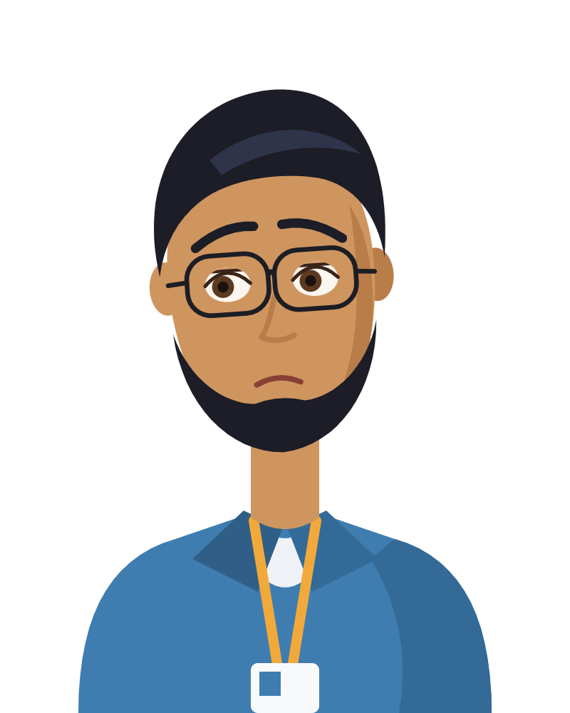
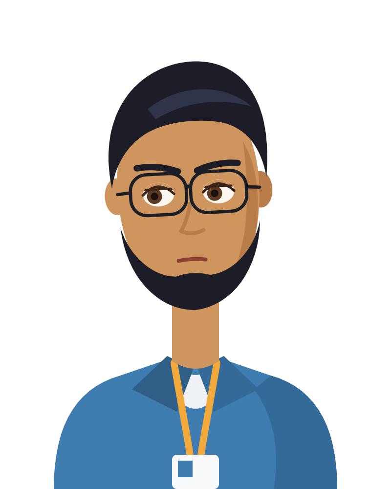
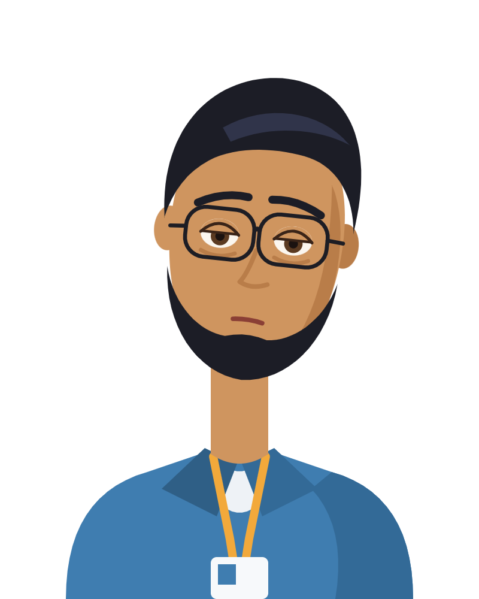
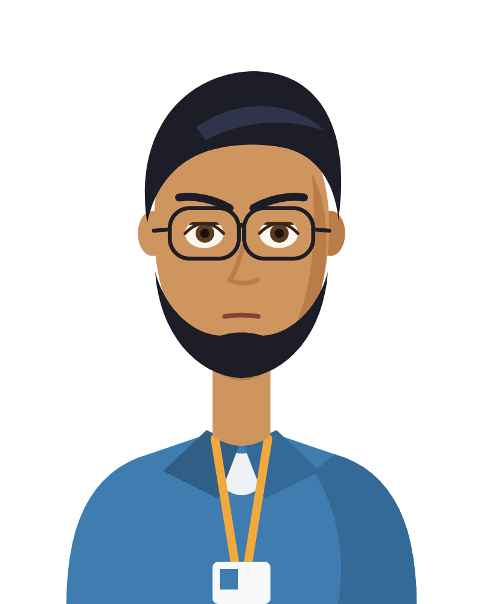
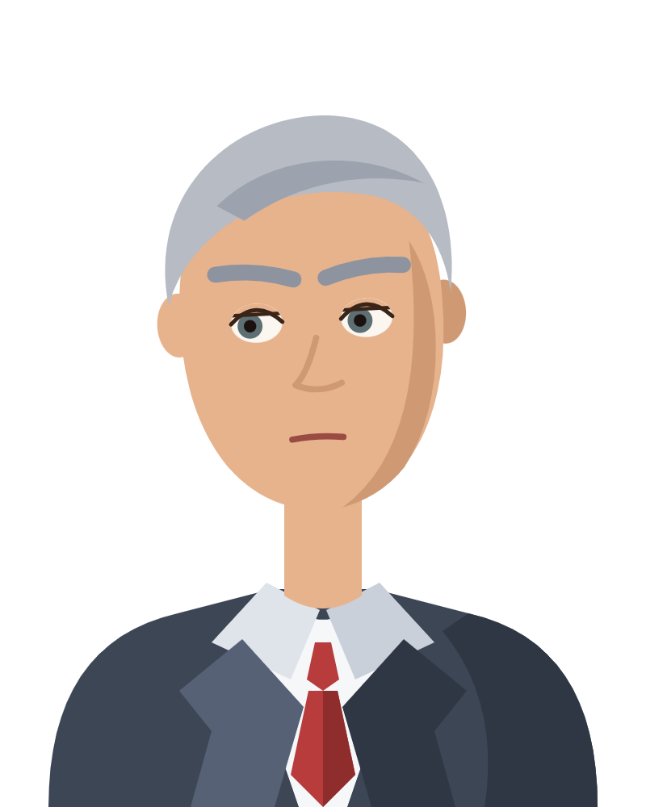

Arjun and the director: flat infographic characters (v2)
Requested review set

The other three expressions each (focused, tired, determined)




Transparency check (same files on a light background)
Design notes
| Arjun Mehta | Director | |
|---|---|---|
| Silhouette | Narrower face, tall swept quiff, short beard, thin round-rectangle glasses, sloped shoulders | Wider face, low grey swept hair, heavy grey brows, no glasses or beard, broad square shoulders |
| Clothing | Steel-blue work shirt, open collar over a white tee, amber site lanyard and ID | Charcoal blazer with lapels, white shirt, red tie |
| Palette | Warm brown skin, near-black hair, steel blue, amber | Light peach skin, silver grey, charcoal, one red accent |
| Shared rules | Same head-to-body ratio, eye shape, brow and mouth construction, no outlines, one shade block, flat fills; clothing and details come only from the project's existing role descriptions (IT & Systems Lead, Operations Director). | |
Known weaknesses: busts only (no hands or full-body poses yet); the glasses frames and the small eyes are the finest detail and are small at thumbnail size; the "tired" and "neutral" faces are close. Poses with hands, head turns toward the evidence, and full-body versions are not made yet and would follow approval.